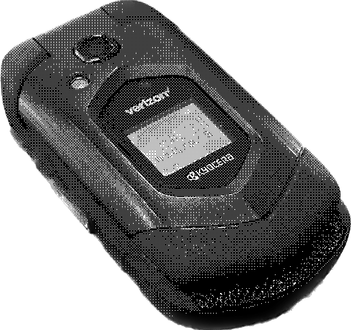

Unleashing the Potential of an AOSP Flip Phone
2023-04-12
Note: I go into a bit of background on this phone during the first portion of this article. If you want to skip straight to the setup guide, scroll down to "Unlocking the Potential".
Around a week ago, I noticed a flip phone being auctioned off on my city's surplus website. I've been looking around for interesting phones as part of a separate project, so I jumped on it and bought it, not entirely knowing the rabbit hole I'd go down in my attempts to push the capabilities of this device.
The device in question is a Kyocera DuraXV LTE, a rugged flip phone from 2017:
Device Profile: Kyocera DuraXV LTE

| Key | Value |
|---|---|
| Release Date | September 2017 |
| Release Price | $264 |
| Device Type | Flip Phone |
| Primary Display | 2.6 inch 320x240 |
| Processor | Snapdragon 210 |
| Memory | 2GB |
| Storage | 16GB + microSD |
| Battery | 1530 mAh |
| Camera | 5MP Rear |
| Operating System | AOSP 7 |
This phone's hardware is definitely unique. It appears to be a slightly upgraded and heavily ruggedized cousin to the Kyocera Cadence (this becomes relevant later), and has this interesting "rounded hexagon" motif going on. The buttons arent too bad, the D-Pad feels nice, and overall it generally feels much higher end than the usual budget KaiOS feature phones.
What's really interesting about this phone is the operating system it's running. With modern flip/feature phones, outside of generic ones that use an RTOS, the two most prominent options are the veritable battalion of KaiOS phones on the low end, with their basic apps and limited functionality, and full on Android feature phones, like the AGM M7 and Xiaomi F21 Pro where the only differentiating factor from a low-end smartphone is the form factor. However, somewhere in the middle, there is a category of stealth Android phones, phones that use a locked down version of AOSP but don't make it clear to the user. This Kyocera phone is just that, a flip phone that on the surface appears to be a boring, basic interface, but is secretly hiding Android goodies underneath. These phones at an initial glance seem to be even less capable than KaiOS phones, typically not even letting users install applications. However, with just a bit of tweaking, we can unlock all sorts of functionality.
The First Attempt
When I first began investigating this phone, and slowly realized it had Android guts, as well as it's similarity to the Kyocera Cadence, I stumbled upon Apps4Flip, a website that offers custom applications for Android feature phones similar to this one. They offer utilities such as a custom application menu that can be launched from the notification screen, a cursor that can be invoked to simulate touchscreen input, and a couple utilities like a file manager, office suite, weather app, and a variety of applications relevant to those of Jewish faith. The purpose of this site seems to be to enable certain sects of Orthodox Jews to add more functionality to make these phones viable for daily use, which is essential to them as devices that can access the unfiltered internet are considered terefah (not kosher).
However, after spending a couple of days figuring out the basics of what this device can do using their software, doing some experimentation, and reading up on places like r/dumbphones, I decided that I wanted something different, and I wanted more. Apps4Flip's solutions feel like the only options when trying to search around for information on extending the capabilities of devices like these, but there are also some drawbacks to using their software, namely:
- The code to the versions of the applications they distribute is not open source, which makes it hard to trust these apps, especially when they're from an unknown party.
- They've allegedly repackaged and redistributed an open source application, while claiming it as their own (they've since walked this back and credited the original developer on their Apps page, but doesn't it doesn't inspire the most trust).
- Their launcher doesn't display all installed applications. I noticed this when I attempted to install F-Droid. I thought that the install had failed as there was nothing in the launcher, but then I noticed a notification from F-Droid. Judging by the fact that the launcher does display MATVT Cursor, they are likely filtering for
com.android.cts.*package names.
Overall, I felt like there was the potential for so much more, so I opted to wipe the phone and start fresh, this time with the challenge of not using any of Apps4Flip's software.
Unlocking the Potential
From the aforementioned couple days of experimentation, there were a few key insights gained:
- APKs can be sideloaded by Bluetooth transferring them from another device, then selecting the file transfer notification to run the app installer (This also works with the built-in browser, as I found out later, but Bluetooth transfer is much more convenient).
- Any compatible APK can be installed, not just ones with
com.android.cts.*packagenames, which apparently is the case for some phones. - Applications that register as launchers can be installed, and the phone will give you a prompt to choose a launcher app to use every time you unlock, but while in any other launcher there is no consistent access to the all-important notification menu.
Armed with these insights, I reset the phone and went through the following setup:
DISCLAIMER: This phone is a spare/test device for me, and as such I had very few qualms with removing core system applications (primarily the default launcher). While the phone seems to be functioning fine, you won' be able to get any system apps you uninstall back without resetting the phone!
Step 1: Enable Developer Mode
Enabling developer mode on this phone is very similar to any other Android phone. Simply navigate to Settings -> About phone -> Software information, select Build number, then press the OK button 7 times or until a prompt at the bottom of the screen says that you are now in Developer Mode.
Now, when we navigate back out to the main Settings menu, there should be an additional option labeled Developer options. Select that and scroll down to USB debugging and turn that on. This will allow us to connect to the phone with adb later to grant applications special permissions.
Step 2: Transfer over Some Apps
Download these 4 APKs to a computer or another Android device:
- Keikai Launcher: The launcher we will be using to replace the default. It's pretty ugly on this phone due to some icon issues, but it's the one I've found that works best with the D-Pad
- MATVT Cursor: A cursor application that we can use to simulate touch input. Essential for interacting with apps at times
- F-Droid: A marketplace for free and open source Android apps, and a great place to find simple apps that work well with this device
- Aurora Store: Allows us to download applications from the Google Play Store
First, transfer over Keikai Launcher. We'll need to do this twice, as when we attempt to select the notification the first time, the phone will prompt us to open Settings to enable "installing apps from unknown sources". Follow the prompts and toggle the setting on, then transfer the file again and install it. Now, every time we unlock the phone (if it's locked with a PIN code), the phone will prompt you to choose between "Idle Launcher" (the default homescreen) and Keikai launcher. Having access to the default homescreen is crucial at this stage, because it gives us consistent access to the Notifications menu.
Next, transfer over MATVT Cursor. Once the application is installed, we will need to use adb to grant it certain permissions, as I wasn't able to successfully do so from within the application. WebADB is a great tool to run adb commands from the browser if you aren't interested in installing the tool locally.
After connecting to the phone with adb (or WebADB), run these commands (if using WebADB, remove the adb shell portion from each command):
adb shell appops set com.android.cts.io.github.virresh.matvt SYSTEM_ALERT_WINDOW allow
adb shell settings put secure accessibility_enabled 1
adb shell settings put secure enabled_accessibility_services com.android.cts.io.github.virresh.matvt/com.android.cts.io.github.virresh.matvt.services.MouseEventService
adb shell am startservice com.android.cts.io.github.virresh.matvt/com.android.cts.io.github.virresh.matvt.services.MouseEventService
Note: The last command may fail or error out (it did for me). I've still been able to use the cursor perfectly fine, so I can only assume that the last command either is still doing what it needs to do, or isn't entirely necessary.
Lastly, go into the MATVT application and override the activation key. I overrode it to key 17, but feel free to remap it to whichever keycode works best for you.
Once these commands have been run, we should now be able to invoke a virtual mouse by holding the * key (if you overrode the activation key with key 17). Holding the key for a short time while in mouse mode will also allow us to scroll using the virtual mouse, but this can be hit-or-miss at times.
Now, transfer over and install F-Droid and Aurora Store, and set them up. With just that simple step, we now have a phone that can download applications off both the F-Droid and Google Play stores!
Step 3: Polishing Things Up
Right now, our phone still pesters about which launcher to use whenever we unlock, which is good because right now, we need the consistent access to the notification menu that the default launcher gives us. However, this is still annoying, and can result in some inconsistent behavior especially when using the back key.
To give us access to the notification menu without relying on the default launcher, we can use the Button Mapper application from the Play Store. This neat tool allows us to bind actions to any key on our device, including launching the notification menu.
After installing the application and granting it the appropriate accessibility permissions, add one of your buttons as a "Custom Button" and bind it to launch your notification menu. I also took the chance to add a few more key bindings to get back some more normal Android interaction. This specific phone has dedicated hardware buttons for PTT, including a big red side button, so I decided to bind multiple actions to it and make it a "home button":
Big Red PTT Button:
- Single Tap: Home
- Double Tap: Recents
- Long Press: Notifications
Top Right "Stop" Button:
- Long Press: Screenshot
Now we can get rid of all that inconsistent launcher behavior by simply removing Kyocera's default launcher. To do this, first open adb (or WebADB) back up, and list the applications with adb shell pm list packages. Then, look for one with a package name that looks something like jp.kyocera.home (I'm really annoyed at myself for not writing the exact package name down). Remove the application with adb shell pm uninstall -k --user 0 com.example.changethis. At your own risk, feel free to "debloat" and remove carrier apps while you're here. I've chosen to keep everything as-is and just disable these extra apps for now, but I may experiment with how much of these I can remove in the future.
Once the default launcher is removed, Keikai launcher should now act seamlessly as your primary homescreen!
Conclusions
Overall, with this setup I think this phone feels far more liberated than with the Apps4Flip suite of apps, as we now have access to a full launcher, multiple app stores on-device, and much more granular controls with remapped buttons. The biggest barrier with this phone now is D-Pad support in applications. Some apps, like the official F-Droid client, and games, like Crossy Road, treat the D-Pad as a first-class citizen and work exceptionally well. Others, like Spotify, don't work at all with the D-Pad and require fully using mouse mode, which can be cumbersome. Many fall into a middle category, where some UI elements can be selected and used with the D-Pad, but other parts need mouse mode. I think there is potential for a part two of this post as I explore more of which apps give the humble D-Pad the love that it deserves.
This phone is a super intriguing device, and now that I have a solid base setup I'm excited to try and see what further capabilities can be added!